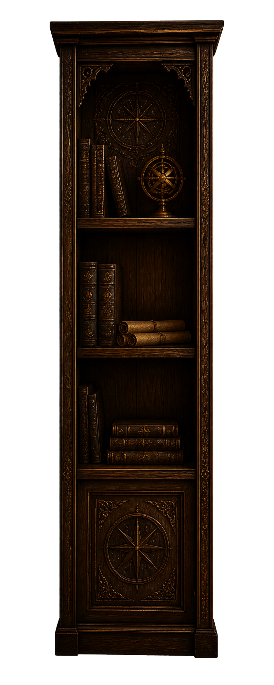
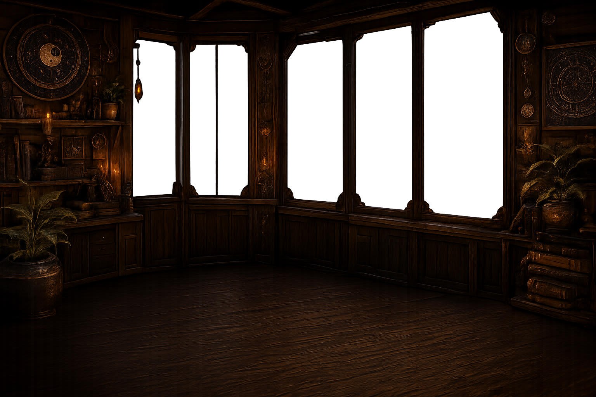
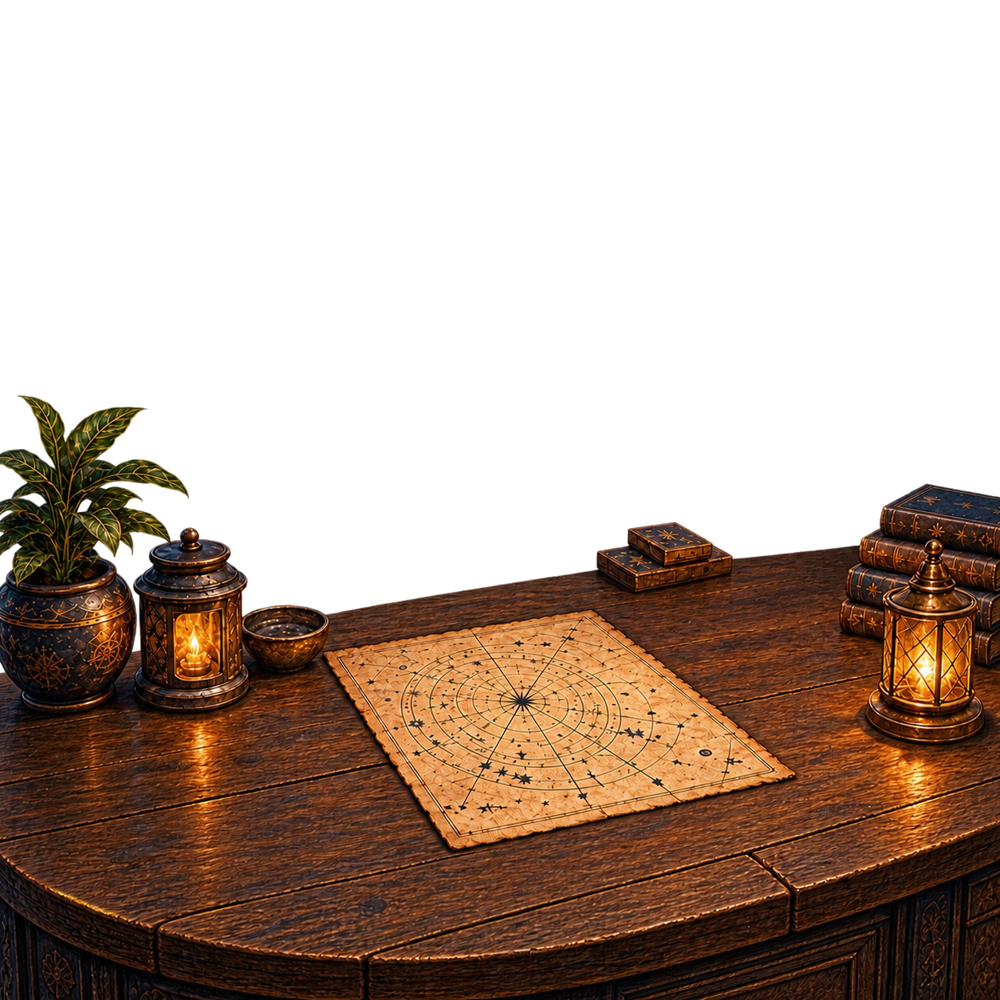
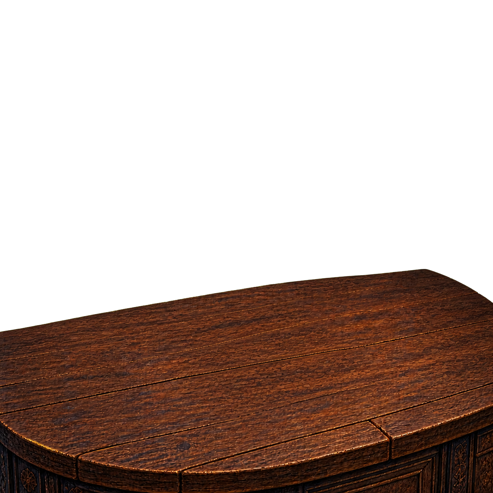
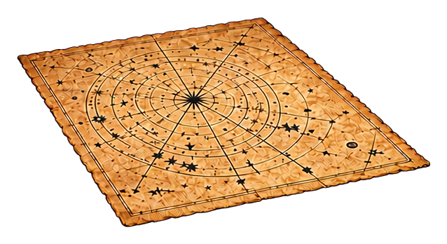

Consultation future
Aucun tirage, pièce, hexagramme ou interprétation n’est généré pendant cette étape.





Je t’écoute.
Espace en préparation
Lorsque tu seras prêt, nous pourrons interroger le Yi Jing.
Aucun tirage, pièce, hexagramme ou interprétation n’est généré pendant cette étape.